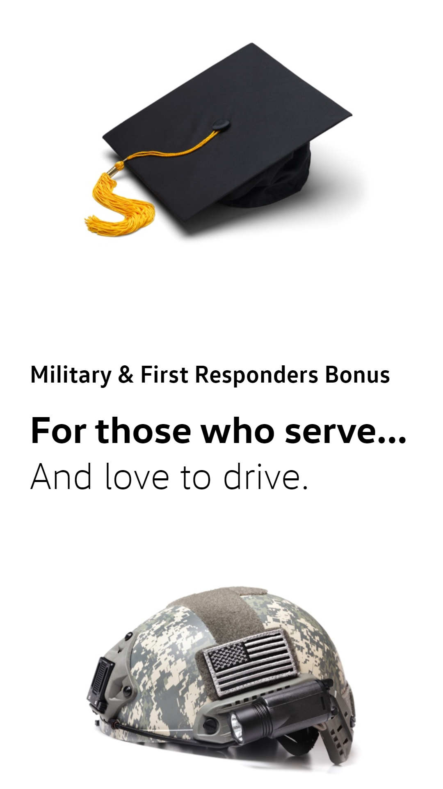
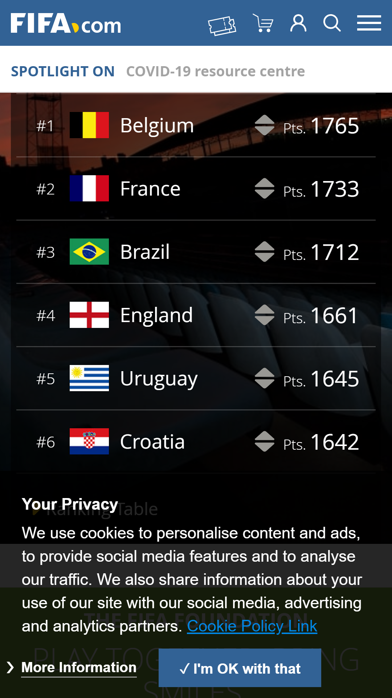

Design Principles Document
Carlos Gerez
White Space and Clean Design
Volkswagen
www.vw.com

In this page we see just two pictures to inspire emotions,to think, and connects the message that lead on how, we can use this page to relief the emotions these pictures bring to the mind. The white space help to concentrate in the details of the objects
and his meanings.
Alignment and Repetition
Fifa
www.fifa.com

Here the align list help to reinforce the idea of who is in the top. The repetition of flags delivered a very strong identity message. The information on details of the ranking are offered in the side bringing centered optical balance to the composition.
Hierarchy
Explora Chile
www.explora.com/

In this add we can see a clear hierarchy of elements. First by being centered, the picture that concentrate attention, and second the reservation bottom. The rest of the controls follow the same visual patron of hierarchy. White space is use wiselly here.